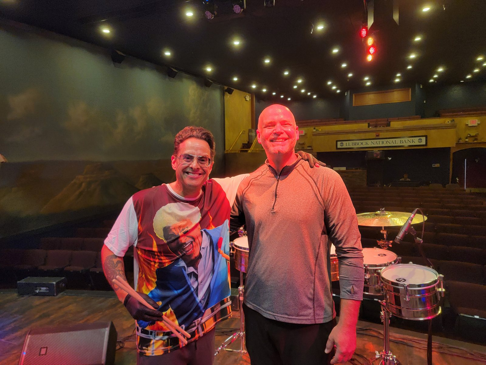

Trent W.
Shuey
Percussionist, educator, and arranger. Assistant Director of Bands and Senior Instructor of Percussion at Angelo State University in San Angelo, Texas.

Study percussion at Angelo State
Dr. Shuey has taught at Angelo State since 2015, and graduates of his studio are teaching and performing across Texas and beyond.
Lessons cover snare drum, timpani, drum set, and Latin and world percussion, with an emphasis on orchestral performance, period-correct approaches to the repertoire, all keyboard percussion, multiple percussion, and jazz. Every player finds a place in the Percussion Ensemble, the jazz bands, or the Ram Band Drumline, and non-majors are welcome too.

What he directs
-
Percussion Ensemble
Concerts every semester, from Ivan Treviño's Glimmer to House Music, a spring 2026 program of music for found objects built around John Cage's Living Room Music.
-
Ram Band Drumline
Every battery arrangement is written by Dr. Shuey. The line has grown from 8 players to more than 20.
-
Jazz Ensembles
The ASU Big Band and jazz combos, with jam sessions open to the community at the House of FiFi DuBois downtown.
-
Ram Horns
Dr. Shuey created the Ram Horns name and identity in 2016 and has directed the group since.
Watch
 Play Shuey Brew, Coffee Stains, an Office, and the Spine, William Kang
Play Shuey Brew, Coffee Stains, an Office, and the Spine, William Kang Play A Tribute to Chick Corea
Play A Tribute to Chick CoreaComing up
ASU Jazz Combos
Halloween Concert and Jam Session
Concert at 4:00, open jam at 5:00. Every musician on stage is in costume. Bring your instrument and sit in.

ASU Percussion Ensemble
In C
Varèse, Ionisation; Mahler, Adagietto from Symphony No. 5, arranged by Grubbs; and Terry Riley, In C.

Official Drummer of Fort Concho
Christmas at Old Fort Concho
Dr. Shuey on the fort's original 1867 drum.
New dates are posted on the events page as soon as they are set.


Recent performances
- Oct. 2026
- Section percussion, West Texas SymphonyAlso in August 2026.
- Oct. 2026
- A Tribute to Chick Corea, ASU Jazz Ensemble
- Fall 2026
- Ram Band DrumlineEvery home football game and the Homecoming parade, playing battery arrangements by Dr. Shuey.
- Sept. 2026
- ASU Jazz Combos at the House of FiFi DuBoisA concert and open jam session downtown.
- Sept. 2026
- Principal timpani, Amarillo Symphony
- May 2026
- Percussionist on bongos and mambo bell for Tito Puente Jr. in Lubbock, Texas.
Thinking about Angelo State?
Prospective students can set up a free lesson and a tour of the percussion studio. Music majors and non-majors are both welcome.